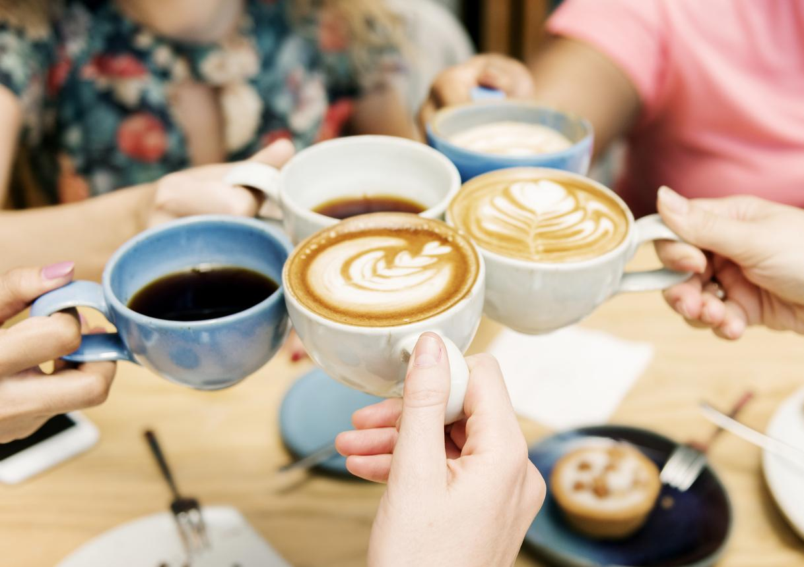
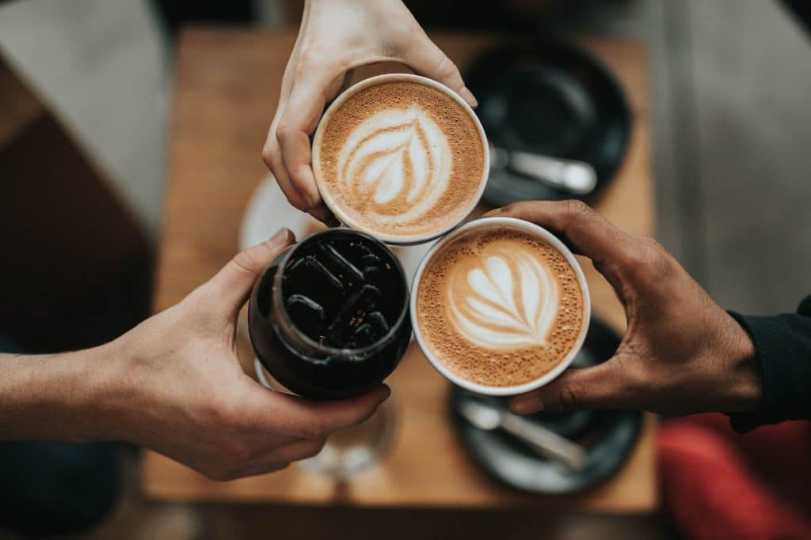

Eventos



Feria de Cafés de Especialidad BA 2025
Fecha: 10 al 12 de mayo
Lugar: Centro Cultural Recoleta
Descripción: Más de 50 marcas, baristas invitados, food trucks, música en vivo y talleres gratuitos.
Inscripción: Entrada libre con registro previo.
Taller de Métodos de Filtrado – por La Finca Café
Fecha: 22 de abril, 18 hs
Lugar: Palermo Soho
Contenido: Taller práctico de V60, Chemex y Aeropress, incluye degustación y materiales.
Cupo: 20 personas
Precio: $6.000